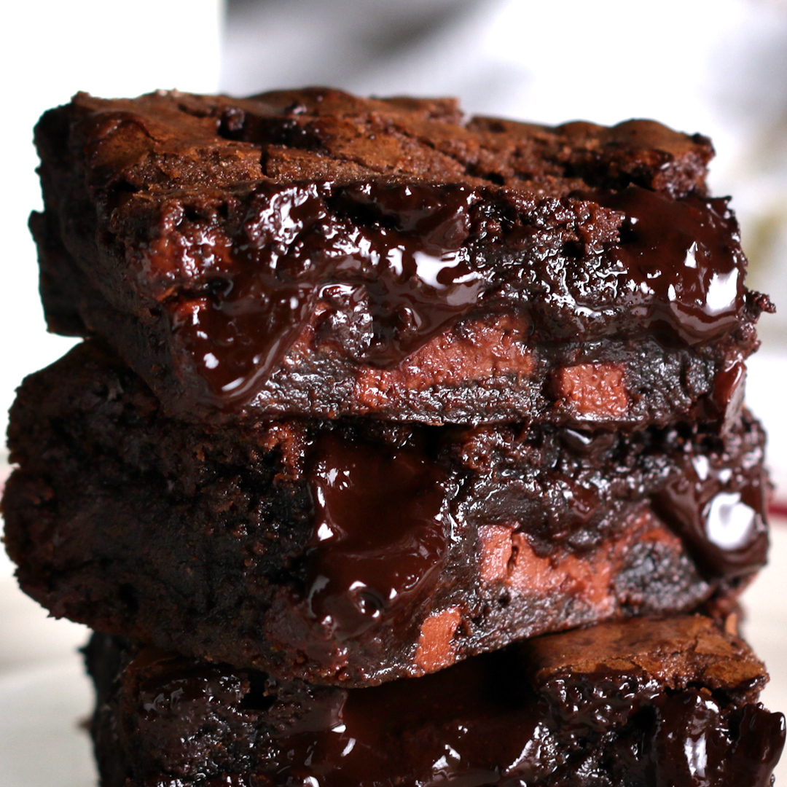

Brownies

Oozing chocolate brownies are the way to go!
Check out this simple brownie recipe for a mouth watering chocolatey treat.
Ingredients
- 2 eggs
- 1 1/4 cups sugar (250 g)
- 12 tablespoons melted butter
- 8 oz of semi-sweet chocolate (225 g)
- 2 teaspoons vanilla extract
- 1/4 cup cocoa powder (30 g)
- 3/4 cup all-purpose flour (95 g)
- 1 teaspoon salt
Steps
- Preheat the oven to 350 degrees Fahrenheit (or 180 degrees Celsius), and line an 8-inch square baking dish with parchment paper.
- Chop your chocolate into chunks and melt half of it in the microwave in 20-second intervals. Save the second half for later.
- In a large bowl, mix the butter and sugar, then beat in the eggs and vanilla for 1-2 minutes until the mixture becomes fluffy and light in colour.
- Whisk in the melted chocolate (not too hot) and sift in the flour, cocoa powder, and salt. Add in the dry ingredients, being careful not to overmix to avoid a cake-like texture.
- Add in the chocolate chunks and transfer the batter to the baking dish.
- Bake for 20-25 minutes, depending on how fudgy you like rownies, then cool completely.
- That's it! Slice and serve the brownies.